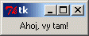
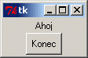
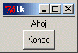
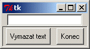
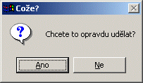
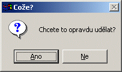

Níe uvedenı text pochází z prvního vydání. Nad tímto textem se nachází aktuální stav po revizi smìøující k druhému vydání.
Následující téma se vìnuje nejdøíve zpùsobu vıstavby programu s grafickım uivatelskım rozhraním (GUI) v obecném smyslu. Poté se zamìøíme na to, jak se pro tento úèel pouívá rodná nástrojová sada systému Python pro tvorbu grafického uivatelského rozhraní — Tkinter. Neèekejte, e pùjde o dokonalou referenèní pøíruèku pro Tkinter. Nejedná se dokonce ani o ucelenou uèebnici. Velmi dobrá a detailní uèebnice, která se tomuto tématu vìnuje, ji existuje. Odkaz na ni naleznete na webovskıch stránkách systému Python. Tato kapitola se vás spíše bude snait provést základy programování grafického uivatelského rozhraní (GUI), seznámí vás s jeho základními prvky a zpùsobem jejich pouití. Podíváme se také na to, jak nám mùe pøi vıstavbì aplikace s grafickım uivatelskım rozhraním pomoci objektovì orientované programování.
Ze všeho nejdøíve bych rád øekl, e se zde nenauèíte nic nového, co se tıká programování. Programování grafického uivatelského rozhraní je stejné jako jakıkoliv jinı druh programování. Mùete pouívat posloupnosti pøíkazù, cykly, vìtvení a moduly stejnì, jak jsme si ukázali døíve. Èím se programování grafického uivatelského rozhraní obvykle liší je to, e obvykle pouíváme nìjakou sadu nástrojù (toolkit) a to nás nutí postupovat v souladu se vzory, které do návrhu sady nástrojù vnesl její tvùrce. Kadá nová sada nástrojù definuje své aplikaèní programátorské rozhraní (API) a mnoinu návrhovıch pravidel, které se vy, jako programátor, musíte nauèit. A právì to je ten dùvod, proè se vìtšina programátorù snaí tvoøit standardy na základì pouze nìkolika nástrojovıch sad, které jsou dostupné pro více programovacích jazykù. Zvládnutí nové nástrojové sady (toolkit [túlkit]) bıvá mnohem obtínìjší, ne zvládnutí nového programovacího jazyka.
Vìtšina programovacích jazykù, které se pouívají pro vytváøení aplikací s okny, bıvá dodávána spolu s toolkitem. (Jde obvykle o tenkou vrstvu nad nejjednoduššími nástroji, které jsou zabudovány pøímo do systému, kterı okna podporuje.) Pøíkladem mohou bıt Visual Basic, Delphi (Kylix) a Visual C++/.NET.
Java se od nich odlišuje tím, e se jazyk dodává s jeho vlastním grafickım toolkitem (nazıvá se Swing). Ten je podporován na kadé platformì, kde mùe bìet Java — co jsou témìø všechny platformy.
Poznámka pøekladatele: VB, Delphi jsou jazyky s podporou Rapid prototyping, resource, nástroje, podpora pro okna uvnitø jazyka. Visual C++ v podstatì standardní pøekladaè jazyka C++ s nìkterımi nestandardními rozšíøeními. .NET je jazykovì nezávislá, objektovì orientovaná platforma, kde èást pro okna je jen èástí. Longhorn (2005/2006) bude pøekrıvat celou mnoinu funkcí jádra systému (kompatibilita). .Net jazykovì neutrální, jazyky CLI, CLR se podobá Java runtime, WindowForms lze pøirovnat k Swingu, ale je jazykovì nezávislı, C# lze pøirovnat k Javì. Celkovì má .Net blíe k jádru systému. Struèné vysvìtlení ponechat zde, detaily do cztuttrn.
Existují ale i další toolkity, které mùete pro konkrétní operaèní systém (Unix, Mac, Windows, atd.) získat samostatnì. Jejich souèástí jsou obvykle adaptéry, které umoòují jejich pouití z rùznıch jazykù. Nìkteré z nich jsou komerèní, ale øada z nich je volnì dostupná (freeware). Jako pøíklad uveïme GT/K, Qt, Tk. Všechny mají své webové stránky. Vyzkoušejte napøíklad:
V toolkitech Qt a GT/k je napsána vìtšina linuxovıch aplikací. Oba jsou pro nekomerèní pouití dostupné zdarma. (To znamená, e je mùete volnì pouívat, pokud nechcete své programy prodávat za úèelem vıdìlku.) Pokud chcete, mùete pro Qt získat i komerèní licenci.
U jazyka Python se za standardní prostøedí pro tvorbu grafického uivatelského rozhraní povauje Tkinter (je souèástí instalace). Prostøedí Tkinter je zaloeno na Tk, co je velmi starı toolkit, dostupnı pro více operaèních systémù. A právì na tuto nástrojovou sadu se podíváme blíe. Její verze jsou k dispozici i pro jazyky Tcl a Perl.
Principy, na kterıch je toolkit Tk zaloen, se od ostatních nástrojovıch sad mírnì liší. Proto si na závìr uvedeme struènı pøehled jiného populárního nástroje pro tvorbu grafického uivatelského rozhraní v systému Python (a také v jazycích C/C++), kterı je zaloen na obvyklejších pøístupech. Nejdøíve si ale uveïme obecné principy.
Jak u jsme se døíve nìkolikrát zmínili, pøirozenou vlastností aplikací s grafickım uivatelskım rozhraním je to, e jsou témìø vdy øízeny událostmi. Pokud si nevzpomínáte, co se tím myslí, zopakujte si téma událostmi øízeného programování.
Pøedpokládám, e z uivatelského hlediska ji grafické uivatelské rozhraní znáte. Zamìøíme se na to, jak takové programy fungují z hlediska programátora. Nebudeme zabíhat do takovıch detailù, jak se napøíklad tvoøí rozsáhlá a sloitá grafická uivatelská rozhraní s mnoha okny, rozhraní pro práci s více dokumenty (MDI) a podobnì. Pøidríme se takovıch základù, jako je vytváøení jednoduchého okna aplikace s nìjakımi popisnımi texty, s tlaèítky, prvky pro vstup textu a s okny pro zobrazování zpráv (message box).
Nejdøíve si zkontrolujme naši slovní zásobu. Programování grafického uivatelského rozhraní pouívá svou vlastní sadu programátorskıch pojmù. Nejbìnìjší s nich jsou uvedeny v následující tabulce:
| Pojem | Vysvìtlení |
|---|---|
| Okno (Window) | Plocha na obrazovce, která je ovládána aplikací. Okna mají obvykle obdélníkovı tvar, ale nìkterá prostøedí pro tvorbu grafického uivatelského rozhraní dovolují pouití i jinıch tvarù. Okna mohou obsahovat další okna. Èasto je kadı ovládací prvek grafického uivatelského rozhraní tvoøen svım vlastním oknem. |
| Ovládací prvek (Control) | Ovládací prvek je objekt grafického uivatelského rozhraní, kterı se pouívá pro ovládání aplikace. Ovládací prvky mají urèité vlastnosti a obvykle generují nìjaké události. Ovládací prvky obvykle souvisejí s odpovídajícími objekty na aplikaèní úrovni a jejich události jsou svázány s metodami aplikaèních objektù. Pøi vıskytu události se tedy provede jedna z odpovídajících metod. Prostøedí pro tvorbu grafického uivatelského rozhraní obvykle poskytuje mechanismus, kterım se vazba mezi událostí a metodou ustanoví. |
| Widget | Ovládací prvky mají nìkdy viditelnou podobu. Nìkteré ovládací prvky (jako tøeba èasovaèe) sice mohou bıt spojeny s nìjakım oknem, ale samy o sobì nejsou viditelné. Prvky typu widget tvoøí tu podmnoinu ovládacích prvkù, které jsou viditelné a se kterımi mùe uivatel nebo programátor manipulovat. Ukáeme si pouití následujících prvkù typu widget:
Jinde v této uèebnici jsou pouity další prvky, kterımi se ale v této kapitole nebudeme zabıvat:
A nakonec si uveïme prvky, kterımi se nebudeme zabıvat vùbec:
Poznámka pøekladatele: Protoe pro pojem widget nemáme dostateènì struènı èeskı ekvivalent, pøekládám jej v zájmu dobré èitelnosti textu jako ovládací prvek, i kdy jsem si vìdom, e tento pojem je obecnìjší, ne v pøípadì anglického originálu. Pokud by mohly vzniknout nejasnosti kolem charakteru prvku nebo pokud chci naznaèit, co obsahoval originální text, uvádím slovo widget jako souèást opisu, kterım obcházím nutnost jeho skloòování. V nìkterıch pøípadech slovo widget uvádím v závorkách. |
| Rámec (Frame) | Jde o prvek typu widget, kterı se pouívá k seskupení dalších prvkù typu widget dohromady. Rámec se èasto pouívá jako reprezentant celého okna. Uvnitø rámce se mohou nacházet další rámce. |
| Pøedpis pro rozloení prvkù (Layout) | Ovládací prvky jsou uvnitø rámce umístìny podle urèitého pøedpisu. Ten mùe bıt definován rùznım zpùsobem. Buï se pouívají souøadnice odpovídající pixelùm na obrazovce, nebo se poloha urèuje relativnì vùèi jinım prvkùm (zarovnání vlevo, nahoru, atd.), nebo se vyuívá uspoøádání do møíky nebo do tabulky. Pouití souøadnicového systému je sice snadno srozumitelné, ale obtínì se pouívá napøíklad v situaci, kdy dochází ke zmìnám rozmìrù okna. Pokud se umístìní prvkù pøedepisuje souøadnicemi, pak by zaèáteèníci mìli pouívat radìji okna, u kterıch nelze mìnit rozmìry. |
| Potomek (Child) | Pøi tvorbì aplikací s grafickım uivatelskım rozhraním èasto vzniká hierarchické uspoøádání ovládacích prvkù. Rámec na nejvyšší úrovni, kterı pøedstavuje okno aplikace, se skládá z podrámcù, které obsahují další rámce nebo ovládací prvky. Vazby mezi ovládacími prvky si mùeme zobrazit jako stromovou strukturu, ve které má kadı ovládací prvek nadøazen jeden rodièovskı prvek a nìkolik potomkù (podøízenıch prvkù). Ve skuteènosti je tato struktura závislostí pøímo uloena v jednotlivıch prvcích (prvek si udruje odkazy na své podøízené prvky — potomky), take programátor — nebo èastìji samo prostøedí grafického uivatelského rozhraní — mùe provádìt nìkteré akce nad ovládacím prvkem a všemi jeho potomky najednou. |
V této sekci vytvoøíme pøes pøíkazovı øádek systému Python jednoduchá okna a ovládací prvky (widget). Poznamenejme, e aplikaci, která vyuívá Tkinter, nemùeme spolehlivì spouštìt z prostøedí IDLE, protoe IDLE samotné je aplikací, která Tkinter vyuívá. Z IDLE samozøejmì mùeme pouít jeho editor a vytvoøit v nìm zdrojové texty, ale vısledek musíme spustit z pøíkazového øádku operaèního systému. Uivatelé prostøedku Pythonwin naopak takovou aplikaci spouštìt mohou, protoe Pythonwin pouívá jinou nástrojovou sadu pro tvorbu grafického uivatelského rozhraní — MFC (Microsoft Foundation Classes). Nicménì i v prostøedí Pythonwin mùeme u tkinterovskıch aplikací pozorovat jisté neoèekávané projevy chování. Proto zde radìji pouijeme pøíkazovı øádek systému Python, kterı máme k dispozici po spuštìní interpretu jazyka Python prostøedky operaèního systému (v DOSovém oknì).
Mezi první poadavky kadého tkinterovského programu patøí importování
jmen ovládacích prvkù. Mohli byste samozøejmì importovat jen modul, ale
velice rychle byste se unavili tím, e byste pøed kadé jméno museli
pøipisovat Tkinter.
Tento pøíkaz vytvoøí ovládací prvek na nejvyšší úrovni hierarchie našich
ovládacích prvkù. Všechny ostatní ovladací prvky budou vytvoøeny jako jeho
potomci. Povšimnìte si, e se zobrazilo nové prázdné okno s textem
tk v titulku okna, s ikonou Tk a s obvyklou sadou ovládacích
tlaèítek (zmenšení do ikony, zvìtšení pøes celou obrazovku, atd.). Tak, jak
budeme aplikaci postupnì vytváøet, budeme do tohoto okna pøidávat další
prvky.
['_tclCommands', 'children', 'master', 'tk']
Funkce dir nám ukáe všechna jména, která jsou zadanému
argumentu známa. Mùeme ji pouít i pro moduly, ale v tomto pøípadì se
chceme podívat na vnitøek objektu top, co je instance tøídy
Tk. Jde o jeho atributy. Povšimnìte si zejména atributù
children a master, která zachycují vazby v
hierarchii ovládacích prvkù. Povšimnìte si také atributu
_tclCommands, kterı má svùj pùvod ve skuteènosti — jak si
mùete vzpomenout —, e Tkinter je vytvoøen nad nástrojovou sadou
systému Tcl, která se jmenuje Tk.
Poznámka pøekladatele: Vypsanı seznam jmen je ve skuteènosti mnohem delší a popíše vám celou obrazovku — pøinejmenším u verze Python 2.2.
Vytvoøí se ovládací prvek (widget) Frame, ve kterém budou
umístìny ovládací prvky, které budeme pouívat. Pøi vytváøení instance
Frame je jako první argument (a v tomto pøípadì jedinı) pouit
top. Tím øíkáme, e F bude ovládací prvek,
vytvoøenı jako potomek ovládacího prvku top.
Povšimnìte si, e po provedení tohoto pøíkazu se okno Tk scvrkne na
velikost pøidaného ovládacího prvku tøídy Frame. Ten je v
souèasnosti prázdnı, take okno je teï velmi malé. Metoda
pack() aktivuje správce rozloení (Layout Manager),
kterı je znám jako packer (pakovaè, stlaèovaè). Ten se pøi
jednoduchıch rozloeních prvkù pouívá velmi snadno, ale s tím, jak se
rozloení prvkù stává sloitìjším, zaèíná bıt ponìkud neohrabanı. Pro tyto
chvíle se jej budeme dret — snadno se pouívá. Povšimnìte si,
e ovládací prvky (widget) nebudou v naší aplikaci vidìt a do té doby, ne
provedeme jejich "spakování" (nebo pouijeme jinou metodu správce rozloení
prvkù).
Tímto pøíkazem vytvoøíme novı objekt lHello jako instanci
tøídy Label. Rodièovskım (nadøízenım) ovládacím prvkem je
F a atributu text pøiøazujeme hodnotu "Ahoj,
vy tam!". Konstruktory objektù modulu Tkinter mívají obvykle mnoho
parametrù (kadı z nich má pøednastavenou hodnotu). Všimnìte si, e se jim
èasto pøedávají argumenty zpùsobem, kdy vyuíváme monosti urèení
pøíslušného parametru jménem. (Srovnejte to s èastìjším, pozièním zpùsobem pøedávání argumentù, kdy
udáváme pouze hodnotu parametru, ale nikoliv jméno. V takovém pøípadì musíme
hodnotu uvést na správné pozici.) Povšimnìte si rovnì, e objekt
není dosud viditelnı, protoe jsme dosud neprovedli "spakování".
Nakonec si uveïme poznámku ke konvenci pro volbu jména: Pøed jméno
Hello jsem pøidal malé l jako Label,
které má pøipomínat vıznam objektu. Stejnì jako u ostatních konvencí pro
volbu jména je dodrování této konvence vìcí vašeho názoru. Podle mì je její
dodrování uiteèné.
Poznámka pøekladatele: V souvislosti s tvorbou programù pro první verze operaèního systému Microsoft Windows byl vypracován celı systém pøedpon pøidávanıch ke jménùm promìnnıch, funkcí a dalších prvkù. Je znám jako maïarská notace. Podrobnosti mùete najít v Charles Simonyi: "Hungarian notation". V poslední dobì ovšem pøevládá názor, e pouívání podobné notace mùe zpùsobovat více problémù, ne uitku. Tıká se to pøedevším vìtších projektù a jazykù s velmi silnou typovou kontrolou, jako je napøíklad jazyk C++. Pouívejte proto podobnıch konvencí s mírou. Vhodná volba identifikátoru (tj. jména) mùe potøebu pouívání podobnıch pøedpon zmírnit.
Teï u vısledek pøedchozích pøíkazù vidíme. Mìl by vypadat nìjak takto:

Objektu tøídy Label mùeme parametry konstruktoru pøedepsat
i další vlastnosti, jako je napøíklad typ a barva písma. Tyto vlastnosti si
ale mùeme zpøístupnit voláním metody configure, kterou
ovládací prvky (widget) modulu Tkinter podporují:
Zpráva se zmìnila. Bylo to docela snadné, e? Pouití metody
configure je vıhodné pøedevším v pøípadech, kdy chcete zmìnit
nìkolik vlastností najednou, protoe je mùeme najednou pøedepsat jako její
argumenty. Pokud ovšem chcete zmìnit jen jedinou vlastnost, jako jsme to
uèinili v naposledy uvedeném pøípadì, mùeme se k objektùm chovat, jako
kdyby se jednalo o slovníky (dictionary, vyhledávací tabulky). Take mùeme
psát:
... je to kratší a snad i srozumitelnìjší.
Objekty typu Label (popisné texty) patøí k docela nudnım
ovládacím prvkùm. Mohou pouze zobrazit text, kterı je urèen jen ke ètení
— i kdy v rùznıch barvách, rùznım písmem a v rùzné velikosti. (Ve
skuteènosti je lze pouít i pro zobrazení jednoduché grafiky, ale jak to
udìlat si ukáeme a pozdìji.)
Døíve ne se podíváme na další typ objektu, zbıvá nám pøedvést ještì
jednu vìc — zpùsob, jak mùeme nastavit titulek okna. Dosáhneme toho
pouitím metody ovládacího prvku na vrcholu hierarchie, objektu
top:
Stejného efektu jsme mohli dosáhnout pøímım pouitím objektu
top, ale technika, vyuívající pøístup prostøednictvím
vlastnosti master objektu tøídy Frame, bıvá
uiteèná — jak uvidíme pozdìji.
Tímto pøíkazem vytvoøíme novı ovládací prvek, tlaèítko (button, èti
[batn]). Tlaèítko nese nápis "Konec" a je spojeno s pøíkazem
F.quit. Povšimnìte si, e pøedáváme jméno metody. Neprovádíme
volání této metody, protoe jsme za jméno nepøidali závorky. To znamená, e
se pøedává objekt s charakterem funkce ve smyslu chápaném v jazyce Python.
Mùe to bıt vestavìná metoda modulu Tkinter, jako v tomto pøípadì, nebo
jakákoliv jiná, námi definovaná funkce. Funkce nebo metoda nesmí mít ádné
argumenty. Metoda quit, podobnì jako metoda pack,
je definována v bázové tøídì, kterou dìdí všechny ovládací prvky modulu
Tkinter.
Metoda pack opìt zajistí zviditelnìní tlaèítka.
Tímto odstartujeme provádìní tkinterovské smyèky zpráv. Povšimnìte si,
vyzıvací znaky '>>> ' pøíkazového øádku systému Python nyní
zmizely. Podle toho poznáme, e øízení další èinnosti pøešlo do reie Tkinter.
Pokud stisknete tlaèítko Konec, vyzıvací znaky pøíkazového
øádku se znovu objeví, co je dùkaz toho, e zafungoval náš parametr
command.
Poznamenejme, e pokud toté provádíme z prostøedí Pythonwin nebo IDLE,
mùe bıt chování odlišné. Pokud tomu tak skuteènì je, zkuste dosud uvedené
pøíkazy zapsat do pythonovského skriptu, tedy do textového souboru s pøíponou
py, a spuste jej z pøíkazového øádku operaèního
systému.
On vlastnì nastal pøíhodnı okamik k tomu, abychom to stejnì vyzkoušeli. Kdy se to tak vezme, tímto zpùsobem se v praxi provozuje vìtšina tkinterovskıch programù. Pouijme klíèové pøíkazy z tìch, o kterıch jsme se zatím bavili:
from Tkinter import * # Vytvoøíme samotné okno. top = Tk() F = Frame(top) F.pack() # Pøidáme ovládací prvky. lHello = Label(F, text="Ahoj") lHello.pack() bQuit = Button(F, text="Konec", command=F.quit) bQuit.pack() # Spustíme smyèku událostí. top.mainloop()
Volání metody top.mainloop zahájí provádìní tkinterovské
smyèky událostí. V tomto pøípadì bude jedinou zachycenou událostí ta, která
odpovídá stisku tlaèítka a která je spojena s provedením metody
F.quit. Její provedení zpùsobí ukonèení aplikace. Vyzkoušejte
si to. Vısledek by mìl vypadat takto:

Poznámka: V následujícím textu budou pøíklady uvádìny v podobì,
jakou mají v pythonovskıch zdrojovıch souborech. Nebudou tedy uvozeny
øetìzcem '>>> ', kterı se vypisuje na zaèátku vstupního
øádku interpretu jazyka Python.
V této èásti bych se rád zamìøil na to, jak Tkinter umísuje prvky
(widget) uvnitø okna. V pøedchozím textu jsme si ji ukázali prvky typu
Frame, Label a Button. Ty nám pro
potøeby této èásti textu postaèí. V pøedchozím pøíkladu jsme pouívali
metodu prvku (widget) zvanou pack k umístìní prvku uvnitø jeho
rodièovského okna. Technicky vzato jsme tím aktivovali správce rozloení
prvkù systému Tk, kterému se øíká packer. Úkolem správce
rozloení prvkù (Layout Manager) je urèení nejlepšího rozloení prvkù, které
je zaloeno na nápovìdì pøedepsané programátorem a na omezeních, jako je
napøíklad velikost okna, kterou ovlivòuje uivatel. Nìkteré typy správcù
rozloení prvkù pouívají pøesné umístìní uvnitø okna, které je pøedepsáno v
pixelech[1]. S tímto
pøístupem se bìnì setkáte v systému Microsoft Windows, napøíklad pøi
pouívání programátorského prostøedí Visual Basic. V modulu Tkinter
dosáhneme tého pøi pouití správce rozloení prvkù, kterému se øíká
placer (doslova "umísovaè") — èiníme tak voláním jeho metody
place. V této uèebnici se uvedenım správcem rozloení zabıvat
nebudeme, protoe obvykle bıvá lepší, kdy si vybereme jeden ze zbıvajících,
inteligentnìjších správcù rozloení prvkù. Jejich pouití zbavuje
programátory starosti o to, co se stane, kdy okno zmìní své rozmìry.
V Tkinter je nejjednodušším správcem rozloení prvkù takzvanı
packer, kterı jsme ji pouívali v pøedchozím textu.
Packer, pokud mu neøekneme jinak, jednoduše skládá ovládací prvky
(widget) jeden na druhı. Z hlediska bìnıch ovládacích prvkù tuto vlastnost
vyuijeme velmi zøídka, ale pokud sestavujeme rozhraní naší aplikace z
rámeèkù (Frame), pak mùeme povaovat skládání rámeèkù na sebe
za docela rozumnı pøístup. Ostatní ovládací prvky mùeme do rámeèkù
umísovat buï s vyuitím správce rozloení typu packer nebo uvnitø
rámeèku podle potøeby vyuijeme vlastností jiného správce rozloení. Pøíklad
pouití takového pøístupu mùete najít v pøípadové
studii.
Ale dokonce i tak jednoduchı správce rozloení prvkù, jako je
packer, poskytuje celou øadu voleb. Napøíklad uvedením argumentu
side (strana, do strany, stranovì) mùeme pøedepsat uspoøádání
našich prvkù ve vodorovném, místo ve svislém smìru:
lHello.pack(side="left") bQuit.pack(side="left")
Tyto pøíkazy pøinutí prvky, aby se skládaly zleva (left [left], znamená levı nebo vlevo).
Take první prvek (typu Label) se objeví úplnì vlevo. Za ním
následuje další prvek (typu Button). Pokud uvedené øádky
pøíkladu upravíme uvedenım zpùsobem, bude vısledek vypadat takto:
A pokud zmìníme hodnotu "left" na "right" ([rajt] znamená pravı,
vpravo), pak se prvek typu Label objeví úplnì vpravo a
prvek typu Button vlevo od nìj, jinımi slovy, co nejvíc vpravo, jak je to za
aktuálního stavu moné. Vısledek bude vypadat takto:

Jedna z vìcí, které si mùete všimnout je, e to nevypadá moc hezky,
protoe pvky jsou pøíliš nalepeny na sebe. Správce packer nám ale
nabízí další parametry, které nám umoní vypoøádat se i s touto situací.
Snadno pouitelné jsou takzvané vycpávky (také vıplnì; v originále
padding, èti pading). Mùeme pøedepsat vodorovné vycpávky
(padx) a svislé vycpávky (pady). Jejich hodnoty se
udávají v pixelech. Doplòme tedy do našeho pøíkladu vodorovné vycpávky:
lHello.pack(side="left", padx=10) bQuit.pack(side='left', padx=10)
Vısledek by mìl vypadat nìjak takto:

Pokud zkusíte mìnit velikost okna, mùete pozorovat, e oba prvky
zachovávají svou vzájemnou pozici, ale zùstávají uprostøed okna. Proè tomu
tak je? Vdy jsme je pøeci nechali poskládat zleva? Odpovìï zní: prvky jsme
poskládali dovnitø obalujícího rámeèku (Frame), ale samotnı
rámeèek jsme do okna vloili (metodou pack) bez uvedení
parametru side. Take rámeèek je jako celek v oknì umístìn
nahoøe uprostøed, co odpovídá základnímu chování správce rozloení typu
packer. Pokud bychom chtìli, aby byly prvky umístìny na poadované
stranì okna, musíme i pøi volání metody pack pro objekt typu
Frame uvést vhodnou hodnotu parametru side:
F.pack(side='left')
Nyní si mùete všimnout, e pøi zmìnì svislého rozmìru okna zùstávají prvky uprostøed vıšky okna — jde opìt o základní chování správce rozloení typu packer.
Nechám u na vás, abyste si sami pohráli s hodnotami parametrù
padx a pady. Pozorujte vliv jejich rùznıch hodnot
a kombinací. Zejména parametry side a
padx/pady umoòují pøi pouití správce rozloení
typu packer pomìrnì pruné monosti umísování prvkù typu widget.
Existují ještì další parametry. Kadı z nich pøidává další, jemnìjší podobu
øízení umístìní. Detaily hledejte na referenèních stránkách modulu
Tkinter.
Modul Tkinter poskytuje ještì další správce rozloení, které jsou známy
jako grid (míka) a placer (umísovaè). Pouití správce
typu grid aktivujeme voláním metody grid() místo
pack(). V pøípadì pouití správce typu placer voláme
místo metody pack() metodu place(). Kadá z
uvedenıch metod má svou sadu parametrù, ale protoe se zde zabıváme pouze
správcem typu packer, budete muset detaily hledat v uèebnici a v
referenèní pøíruèce Tkinter. Zmíním se jen o tom, e správce typu
grid zaøídí uspoøádání prvkù do møíky (jaké pøekvapení!) uvnitø
okna. Jeho pouití je uiteèné napøíklad v pøípadì dialogovıch oken se
zarovnanımi poli pro vkládání textu. U správce typu placer mùeme
pouít buï pevné souøadnice v pixelech nebo relativní souøadnice uvnitø
okna. Poslednì zmiòovaná monost umoòuje, aby vloenı prvek mìnil své
rozmìry souèanì s pvkem napøíklad tak, aby vdy zabíral napøíklad
75 procent svislého prostoru. Tento správce umoòuje øešit zvláštní
návrhové poadavky, ale vyaduje to od nás, abychom si pøedem vše
naplánovali. Vøele vám doporuèuji, abyste si pro tyto úèely obstarali
ètvereèkovanı papír, tuku a gumu.
U prvku (widget) typu Frame mùeme ve skuteènosti ovlivnit
nìkolik uiteènıch vlastností. Kdy se to tak vezme, není špatné, kdy
mùeme prvky uivatelského rozhraní z logického hlediska obalit rámeèkem,
ale nìkdy navíc chceme také nìco vidìt. Hodí se nám to zejména v pøípadech
seskupení ovládacích prvkù jako jsou pøepínací tlaèítka (radio buttons) nebo
zaškrtávací pole voleb (check boxes). Tøída Frame tento problém
øeší tím, e poskytuje vlastnost relief — tak jako mnoho
dalších prvkù Tk typu widget. Relief mùe nabıvat libovolné z následujících
hodnot: sunken ([sankn]; ponoøenı, vmáèknutı),
raised ([reizd]; vystouplı, vyzvednutı), groove
([grúv]; dráka, vyrytı) ridge ([rid]; høbet, geometrickı opak
dráky) nebo flat ([flat]; plochı). Vyzkoušejme u našeho
dialogového okna hodnotu sunken. Jednoduše zmìníme øádek, na
kterém se vytváøí prvek tøídy Frame:
F = Frame(top, relief="sunken", border=1)
Poznámka 1: Musíme uvést i nenulovou hodnotu parametru
border ([bódr]; hranice). Pokud tak neuèiníme, bude sice plocha
prvku typu Frame ponoøená, ale hranice mezi ponoøenou a okolní plochou bude
neviditelná, take nezpozorujeme ádnı rozdíl.
Poznámka 2: … o tom, proè tloušku hranice (border) neuvádíme v uvozovkách. Znalost toho, zda máme pouít uvozovky kolem hodnoty parametru a kdy je vynechávat, patøí k jedné z matoucích vlastností Tk. Obecnì se dá øíci, e u èíselnıch nebo jednoznakovıch hodnot mùeme uvozovky vynechávat. Pokud jde o smìs èíslic a písmen nebo o øetìzec, musíme pouít uvozovky. Podobnı problém spoèívá v tom, kdy pouít malá nebo velká písmena. Naneštìstí zde neexistuje jednoduchı návod. Musíte se prostì uèit ze zkušeností. V pøípadì chyby Python èasto v chybovıch hlášeních vypisuje seznam pøípustnıch hodnot parametrù.
Poznámka pøekladatele k poznámce 2: Aby se zvıšila èitelnost
zdrojovıch textù, jsou pro vyhrazené øetìzcové argumenty definovány
øetìzcové promìnné, které se pouívají v roli pøeddefinovanıch konstant.
Jejich jména jsou psána velkımi písmeny. Naleznete je v souboru
Tkconstants.py. Zde definovaná jména jsou zviditelnìna v rámci
importu Tkinter. Ve zdrojovıch textech proto místo
F = Frame(top, relief="sunken", border=1)
mùeme psát:
F = Frame(top, relief=SUNKEN, border=1)
Podobnì mùeme místo side="left" psát side=LEFT
a podobnì. Uvedené obraty mùete pozorovat dále v textu.
Další vìc, které si mùete všimnout, je ta, e Frame
nevyplòuje okno. Mùeme to napravit pouitím dalšího parametru správce typu
packer, parameru fill ([fil]; vyplnit). Pøi volání
metody pack() tedy zapíšeme:
F.pack(fill=X)
Uvedenı parametr zpùsobí vyplnìní prostoru ve vodorovném smìru. Vyplnìní
prostoru ve svislém smìru zajistíme pouitím fill=Y. Mezi bìné
poadavky patøí vyplnìní prostoru v obou smìrech. Pro tyto pøípady máme k
dispozici hodnotu parametru BOTH. (Nechtìjte po mì, abych zde normálními
písmenky zapisoval vıslovnost. Kadopádnì slovo both znamená
oba — tedy vyplòování v obou smìrech.)
F.pack(fill=BOTH)
Vısledek by mìl vypadat takto:

Podívejme se nyní na prvek (widget) pro tøídy Entry
([entry]; vstup). Jde o známı prvek pro zadávání jednoøádkového textu. Øada
jeho metod se shoduje s metodami propracovanìjšího prvku (widget) tøídy
Text, ale tím se zde zabıvat nebudeme. Pøesto doufám, e
pouíváním metod prvku tøídy Entry získáte dobré základy pro
pozdìjší experimenty s prvkem tøídy Text.
Vrátíme se opìt k našemu programu, kterı zobrazuje Ahoj, vy
tam!, pøidáme do nìj prvek pro vkládání textu do samostatného prvku
typu Frame a také tlaèítko, které umí vymazat text, kterı do
pole vepisujeme. Tím si ukáeme nejen to, jak se dá vytvoøit a pouívat
prvek typu Entry, ale také jak mùeme definovat své vlastní
funkce pro ošetøení (zpracování) událostí a jak je naváeme na ovládací
prvky.
from Tkinter import * # Nejdøíve vytvoøíme funkci pro ošetøení události. def evVymazat(): eTxt.delete(0, END) # Vytvoøíme hierarchicky nejvyšší okno a rámeèek. top = Tk() F = Frame(top) F.pack(expand=True) # Nyní vytvoøíme rámeèek s polem pro vstup textu. fVstup = Frame(F, border=1) eTxt = Entry(fVstup) fVstup.pack(side=TOP, expand=True) eTxt.pack(side=LEFT, expand=True) # Nakonec vytvoøíme rámeèek s tlaèítky. # Pro zvıraznìní jej vytvoøíme jako ponoøenı (vmáèknutı). fTlacitka = Frame(F, relief=SUNKEN, border=1) bVymazat = Button(fTlacitka, text="Vymazat text", command=evVymazat) bVymazat.pack(side=LEFT, padx=5, pady=2) bKonec = Button(fTlacitka, text="Konec", command=F.quit) bKonec.pack(side=LEFT, padx=5, pady=2) fTlacitka.pack(side=TOP, expand=True) # Nyní spustíme smyèku zpráv. F.mainloop()
Povšimnìte si, e jméno funkce pro ošetøení události
(evVymazat) opìt pøedáváme jako hodnotu argumentu
command pøi vytváøení tlaèítka bVymazat.
Povšimnìte si také konvence pro vytváøení jména evXXX funkce
pro ošetøení události — dáváme jí najevo vazbu s odpovídajícím prvkem
typu widget.
Po spuštìní programu obdríme následující vısledek:

Pokud nìco napíšeme do vstupního pole a poté stiskneme tlaèítko
"Vymazat text", bude napsanı text opìt odstranìn.
Doposud jsme pro propojení pythonovskıch funkcí s událostmi tlaèítek
— jako prvkù grafického uivatelského rozhraní — pouívali
vlastnost tlaèítek zvanou command. Nìkdy ovšem potøebujeme
zajistit pøesnìji a pøímo vyjádøenı zpùsob ovládání. Chceme napøíklad
zachytit událost stisku zvláštní kombinace kláves. Mùeme toho dosáhnout
pouitím funkce bind ([bajnd]; svázat, spojit), kterou lze
pøímo vyjádøit vazbu mezi nìjakou událostí pythonovskou funkcí.
Do pøedchozího pøíkladu dodefinujeme "horkou klávesu" (hot key) —
dejme tomu Ctrl-c —, která rovnì zpùsobí vymazání textu.
Potøebujeme tedy navázat kombinaci kláves Ctrl-c na stejnou
funkci pro obsluhu událostí, na kterou se váe událost tlaèítka
Vymazat. Máme tu ale jednu neoèekávanou nepøíjemnost. Parametru
command jsme museli pøedávat jméno funkce, která nesmìla mít
ádné parametry. Pokud chceme pouít k provedení stejné èinnosti funkci
bind, musí navazovaná funkce definovat jeden parametr. Proto
musíme vytvoøit novou funkci, která pøebírá jeden argument a volá
evVymazat. Za definici funkce evVymazat proto
pøidejme následující definici:
def evHorkaKlavesa(udalost):
evVymazat()
A za definici prvku typu Entry pøidejme následující
øádek:
# Definice klávesy je citlivá na velikost písmen.
eTxt.bind("<Control-c>", evHorkaKlavesa)
Spuste znovu upravenı program. Nyní mùete text vymazat buï stiskem
pøíslušného tlaèítka nebo stiskem kombinace kláves Ctrl-c.
Funkci bind mùeme pouít i pro zachycení takovıch událostí,
jako jsou kliknutí myši, událost získání nebo ztráty aktivity okna (fokus)
nebo dokonce událost, která doprovází situaci, kdy se okno stane viditelnım.
Více informací na toto téma naleznete v dokumentaci k Tkinter. Nejsloitìjší
obvykle bıvá zjistit podobu zápisu poadované události.
Chceme-li uivatelùm našeho programu zobrazit krátkou zprávu, mùeme k
tomu vyuít prvek zvanı Message Box ([mesid box]; doslova okno se
zprávou). Pøi vyuití Tk je to velmi snadné. Za tímto úèelem mùeme pouít
funkce modulu tkMessageBox napøíklad takto:
import tkMessageBox
tkMessageBox.showinfo("Titulek okna", "Krátká zpráva")
Pro zobrazování oken chybovıch hlášení, varování, dotazù typu Ano/Ne nebo
OK/Storno existují také další funkce nazvané showXXX ([šou];
uka). Pøíslušná okna se odlišují rùznımi ikonami a tlaèítky. Dvì poslední
zmínìné varianty pouívají místo názvu tvaru showXXX názvy
askXXX ([ásk]; zeptej se) a vracejí hodnotu, která øíká, jaké
tlaèítko uivatel stiskl:
vysledek = tkMessageBox.askokcancel("Co zvolíte?", "Chcete zastavit èinnost?")
print vysledek
Poznámka pøekladatele k èeskım textùm s
diakritikou: Více podrobností o problémech hledejte v poznámce, ke vstupu èeskıch znakù,
která se vztahuje k èásti uèebnice, kde jsme se zabıvali vstupem z klávesnice. Naleznete v ní ovšem i údaje
k pouívání èeskıch textù pro prvky
grafického uivatelského rozhraní. Struènì: pro zobrazení èeského textu
v oknech Tk mùeme vyuít pøevodu do kódování Unicode. Vyuijeme k tomu
funkci unicode():
# -*- coding: cp1250 -*-
import tkMessageBox
vysledek = tkMessageBox.askokcancel(
unicode("Co zvolíte?", "cp1250"),
unicode("Chcete zastavit èinnost?", "cp1250"))
print vysledek
První komentáøovı øádek øíká, e zdrojovı text byl programu byl zapsán v
kódování cp1250 — je známé také jako
windows-1250. Øádek se uvádí hned na zaèátku skriptu, obvykle
jako první nebo druhı. (V unixovém svìtì se na prvním øádku uvádí jinı typ
komentáøe, kterı pro skripty s pøíznakem spustitelnosti urèuje jméno
programu, kterı má skript interpretovat.) Zvláštní tvar øádku s
posloupnostmi -*- souvisí s konvencemi, které byly v minulosti
zavedeny u nìkterıch známıch textovıch editorù. Pokud tento øádek neuvedeme,
pak se pøi spuštìní skriptu (pøinejmenším od verze Pythonu 2.3) setkáme s
varovnım hlášením, e byl v øetìzci pouit znak s kódem vìtším, ne 127 a
pøitom nebylo upøesnìno pouité kódování.
Abych v dalších pøíkladech nemusel vymıšlet texty, které vypadají èesky a pøitom neobsahují znaky s diakritikou, budu tento obrat pouívat. V praxi je ale vıhodnìjší nadefinovat si obalující funkce nebo metody tøíd (pøípadnì odvozené tøídy), které pøevody kódování ukrıvají a pøi psaní zdrojového textu se nám to pak jeví, jako kdyby Python umìl odjakiva èesky.
A takto vypadají nìkterá okna se zprávami:

 

V úvodních èástech této uèebnice jsme srovnávali Python s Tcl. Proto
povauji za rozumné, abychom si ukázali, jak by úvodní pøíklad s prvky typu
Label a Button vypadal v originální podobì zapsané
v Tcl/Tk:
Label .lHello -text "Ahoj, vy tam!" Button .bHello -text Konec -command "exit" wm title . Ahoj pack .lHello .bHello
Jak sami vidíte, zápis je velmi struènı. Hierarchie prvkù typu widget je
vyjadøována s vyuitím konvence jejich pojmenování, kde prvek se jménem
'.' stojí na nejvyšší úrovni. Jak u je v Tcl zvykem, prvky
typu widget jsou vyjadøovány pøíkazy, kterım jsou poadované vlastnosti
pøedány formou argumentù. Doufám, e je vám pøevod parametrù prvkù do podoby
pojmenovanıch argumentù v jazyce Python docela jasnı. Pokud tedy pøi
programování s Tkinter potøebujete vyøešit nìjaké problémy, mùete pouít
dokumentaci systému Tcl/Tk (které je velmi mnoho). Pøepis do Tkinter je
vìtšinou zøejmı.
Dál u se v tomto místì do Tcl/Tk pouštìt nebudeme. V následujícím textu si ukáeme bìnì pouívanou techniku pro zabalení aplikací s grafickım uivatelskım rozhraním vyuívajících Tkinter do podoby objektù.
Pøi programování aplikací s grafickım uivatelskım rozhraním se bìnì
celá aplikace obaluje do podoby tøídy. To vyvolává otázku, jak do této
struktury tøíd napasujeme prvky typu widget modulu Tkinter? Na vıbìr máme
dvì monosti. Buï se rozhodneme pro odvození tøídy aplikace od tkinterovské
tøídy Frame, nebo uloíme referenci na hierarchicky nejvyšší
okno do èlenské promìnné. Poslednì zmínìnı pøístup se bìnì pouívá i u
jinıch prostøedkù (toolkit), take jej pouijeme i my. Pokud byste chtìli
vidìt pouití prvního ze zmiòovanıch pøístupù, vrate se k pøíkladu v
kapitole Událostmi øízené
programování. (Zmínìnı pøíklad mimo jiné ukazuje základy pouití
neuvìøitelnì univerzálního tkinterovského prvku (widget) tøídy
Text.)
Poznámka pøekladatele: Pøístup, kdy ukládáme referenci na hierarchicky nejvyšší okno odpovídá obecnému doporuèení pøi objektovì orientovaném návrhu aplikací. To øíká, e bychom mìli dávat pøednost kompozici pøed dìdièností. Jinımi slovy to znamená, e pokud si mùeme vybrat, zda spojit funkènost dvou tøíd dohromady, bıvá lepší, kdy nìjak spojíme objekty dvou jednodušších tøíd, ne kdybychom vytváøeli jednu novou, sloitìjší tøídu. Ve svém dùsledku to vede k vyšší prunosti pøi budoucích úpravách návrhu aplikace. Návrh bıvá také pøehlednìjší. Dìdiènost (tj. odvozování jedné tøídy objektù z jiné) bychom mìli pouívat pøedevším tehdy, kdy pouze upravujeme funkènost bázové tøídy pro speciální úèel. Nemìli bychom ji pouívat, kdy chceme propojit funkènosti dvou tøíd s odlišnım úèelem.
Vıše uvedenı pøíklad, vyuívající vstupní pole typu Entry,
tlaèítko Vymazat a tlaèítko Konec, pøevedeme do objektovì orientované
podoby. Nejdøíve si vytvoøíme tøídu aplikace a v rámci jejího konstruktoru
poskládáme viditelné èásti grafického uivatelského rozhraní.
Referenci na vıslednı prvek typu Frame pøiøadíme do
self.hlavniOkno. Tím lze zajistit pøístup k hierarchicky
nejvyššímu prvku typu Frame ostatním metodám tøídy. Ostatní
prvky (widget), ke kterım bychom mohli chtít pøistupovat (jako je napøíklad
pole typu Entry) jsou podobnım zpùsobem pøiøazeny do èlenskıch
promìnnıch instance tøídy Frame. Pøi vyuití popsané techniky
se funkce pro zpracování událostí stanou metodami aplikaèní tøídy a kadá z
tìchto metod mùe pøistupovat k libovolnım datovım èlenùm aplikace (aèkoliv
v tomto pøípadì ádné datové èleny nevytváøíme) prostøednictvím reference
self. Tím zajistíme pøirozené propojení prvkù grafického
uivatelského rozhraní s ostatními aplikaèními objekty:
from Tkinter import *
class AplikaceVymazat:
def __init__(self, rodic=0):
self.hlavniOkno = Frame(rodic)
# Vytvoøíme widget tøídy Entry
self.vstup = Entry(self.hlavniOkno)
self.vstup.insert(0, "Ahoj, vy tam!")
self.vstup.pack(fill=X)
# Nyní pøidáme dvì tlaèítka a pouijeme efekt dráky.
fTlacitka = Frame(self.hlavniOkno, border=2, relief=GROOVE)
bVymazat = Button(fTlacitka, text="Vymazat",
width=8, height=1, command=self.vymazatText)
bKonec = Button(fTlacitka, text="Konec",
width=8, height=1, command=self.hlavniOkno.quit)
bVymazat.pack(side=LEFT, padx=15, pady=1)
bKonec.pack(side=RIGHT, padx=15, pady=1)
fTlacitka.pack(fill=X)
self.hlavniOkno.pack()
# Nastavíme nadpis okna.
self.hlavniOkno.master.title("Vymazat")
def vymazatText(self):
self.vstup.delete(0, END)
aplikace = AplikaceVymazat()
aplikace.hlavniOkno.mainloop()
Vısledek vypadá takto:

Stojí za povšimnutí, e vısledek vıraznì pøipomíná pøedchozí verzi pøíkladu. Trochu jsme upravili spodní rámeèek, aby získal pìknìjší podobu s drákou okolo. Nastavili jsme také šíøky tlaèítek, abychom se pøiblíili vzhledu, kterı bude mít další pøíklad, vyuívající nadstavbu wxPython.
Do podoby objektu samozøejmì mùeme zabalit nejen hlavní aplikaci. Mohli
bychom vytvoøit tøídu s prvkem typu Frame, kterı obaluje
standardní sadu tlaèítek. Tu pak mùeme vyuívat napøíklad pøi vytváøení
dialogovıch oken. Mohli bychom dokonce vytvoøit tøídy pro celé dialogy a ty pak
pouívat v nìkolika projektech. Nebo bychom mohli rozšíøit schopnosti
standardních prvkù typu widget definicí odvozenıch tøíd. Napøíklad bychom
mohli vytvoøit tlaèítko, které mìní barvu v závislosti na svém stavu. Nìco
takového provádí modul Python Mega Widgets (PMW), co je rozšíøení
Tkinter — PMW si mùete stáhnout (download).
Pro práci s grafickım uivatelskım rozhraním je k dispozici mnoho dalších
nástrojù (toolkit), ale jedním z nejpopulárnìjších je wxPython. Ten je pro
zmìnu pythonovskou obálkou kolem nástroje wxWindows pro jazyk C++. Z
obecného hlediska je wxPython mnohem typiètìjším nástrojem pro práci s
grafickım uivatelskım rozhraním, ne je Tkinter. V základní podobì také
poskytuje více standardní funkènosti, ne Tk. Poskytuje prvky jako tooltip
([túltip];
bublina s textem pro prvek leící pod kurzorem myši),
stavová lišta (status bar) a další, které si v Tkinter musíte vytvoøit sami.
Pomocí wxPython si znovu pøepíšeme døíve uvedenı pøíklad "Ahoj, vy
tam!", kterı pouívá prvky typu Label a
Button.
Co se tıká wxPython, nepùjdeme pøíliš do detailù. Pokud se chcete dozvìdìt více o tom, jak wxPython pracuje, budete si muset stáhnout instalaèní balík z webovskıch stránek wxPython.
Obecnì se dá øíci, e tato nástrojová sada (toolkit) definuje pracovní rámec (framework), kterı nám dovolí vytváøet okna, umísovat do nich ovládací prvky a navazovat na nì metody, tj. definovat, které metody se mají volat pro obsluhu událostí tìchto ovládacích prvkù. wxPython je plnì objektovì orientován, take byste pro obsluhu událostí mìli pouívat opravdu metody a ne funkce. Pøíklad pouití vypadá následovnì:
from wxPython.wx import * # --- Definujeme uivatelskı rámeèek (Frame), kterı se stane hlavním oknem. --- class RamecekAhoj(wxFrame): def __init__(self, rodic, ID, titulek, pozice, velikost): wxFrame.__init__(self, rodic, ID, titulek, pozice, velikost) # Pouití panelu zajistí správné pozadí. panel = wxPanel(self, -1) # Nyní vytvoøíme text a tlaèítka. self.tAhoj = wxTextCtrl(panel, -1, "Ahoj, vy tam!", (3,3), (185,22)) tlacitko = wxButton(panel, 10, "Vymazat", (15, 32)) tlacitko = wxButton(panel, 20, "Konec", (100, 32)) # Nyní sváeme tlaèítka s obslunımi metodami. EVT_BUTTON(self, 10, self.OnVymazat) EVT_BUTTON(self, 20, self.OnKonec) # Následují naše metody pro obsluhu událostí. def OnVymazat(self, udalost): self.tAhoj.Clear() def OnKonec(self, udalost): self.Destroy() # --- Definujeme aplikaèní objekt. --- # Poznamenejme, e všechny wxPythonovské programy MUSÍ definovat # tøídu aplikaèního objektu jako tøídu odvozenou od wxApp. class AplikaceAhoj(wxApp): def OnInit(self): frame = RamecekAhoj(NULL, -1, "Ahoj", (200,50), (200,90)) frame.Show(True) # self.setTopWindow(frame) return True # Vytvoøíme instanci tøídy a spustíme smyèku zpráv. AplikaceAhoj().MainLoop()
Vısledek vypadá takto:

Za povšimnutí stojí pouívání konvence pro pojmenování metod, které mají
bıt volány z rámce (framework) wxPython — OnXxxx. (Pøedloku On bychom
pro tento pøípad mohli doslova pøekládat jako Pøi.)
Povšimnìte si také funkcí EVT_XXX, kterımi se definuje vazba na
události prvkù. (Zkratka
EVT pochází z anglického event [ivent], tj.
událost.) Podobnıch funkcí existuje celá rodina. Systém wxPython
vyuívá celou øadu ovládacích prvkù (widget) — mnohem více, ne je
tomu u Tkinter. Lze jimi realizovat pomìrnì nároèná grafická uivatelská
rozhraní. Naneštìstí se u nich pouívá pøevánì rozmisovací schéma zaloené
na souøadnicích, které budete ji po chvíli vnímat jako velmi únavné.
Existuje sice monost pouití schématu, které se velmi podobá tkinterovskému
správci rozloení zvanému packer, ale tento prostøedek není pøíliš
dobøe dokumentován. Pro tvorbu grafického uivatelského rozhraní existuje
komerènì dostupnı nástroj. Doufejme, e se brzy objeví i nìjaká zdarma
dostupná alternativa.
Za zmínku stojí to, e poslednì uvedenı pøíklad a velmi podobnı, døíve uvedenı pøíklad psanı v Tkinter, mají pøiblinì stejnı poèet øádkù (v anglickém originále jich je 19 pro Tkinter a 20 pro wxPython — pokud nepoèítáme komentáøové a prázdné øádky. V èeském pøekladu jsem se o dosaení pøesnì stejného poètu øádkù nesnail.)
Shrneme-li to, pak v pøípadì, kdy chcete k nìjakému textovì orientovanému nástroji rychle vytvoøit jednoduché grafické uivatelské rozhraní, pak by mìl Tkinter vyhovìt vašim poadavkùm pøi souèasné minimalizaci nutného úsilí. Pokud chcete vytváøet aplikace s plnohodnotnım grafickım uivatelskım rozhraním, které mají bıt pouitelné na více platformách, pak byste se mìli blíe seznámit s wxPython.
Mezi další nástroje pro budování grafického uivatelského rozhraní patøí MFC, .NET a jsou zde samozøejmì letité curses, co je vlastnì grafické uivatelské rozhraní realizované v textovém prostøedí. Poznámka k .NET.
Poznámka pøekladatele: Knihovna curses Vyuívá moností textového reimu zobrazovacích adaptérù, kdy lze pøedepisovat zobrazování znakù na danıch pozicích textové obrazovky, urèení barev takto zobrazeného textu, a další. Pokud si pod tímto popisem nedovedete nic pøedstavit, vzpomeòte si na klasickou verzi aplikace Norton Commander, jeho kvalitního windowsovského soupeøe zvaného FAR, pøípadnì linuxovskou variantu zvanou Midnight Commander (mc). Mùete si pøedstavit i libovolnou klasickou dosovou aplikaci, která pouívala okénka tvoøená z rámeèkovıch znakù. Aplikace s podobnım vzhledem vznikaly døíve, ne se objevily první verze Windows. Knihovna curses ale má svùj pùvod v unixovém svìtì, z jeho promyšlenıch abstrakcí tvùrci Windows velmi èasto èerpají. Nìkdy to jde tak daleko, e nìkteøí napùl ertem øíkají, e a budou jednou MS Windows dokonèené, bude to nejlépe dokumentovanı Unix na svìtì.
Øadu vìcí, které jsme se nauèili v souvislosti s Tkinter, lze aplikovat na všechny ze zmínìnıch prostøedkù pro tvorbu grafického uivatelského rozhraní. Kadı z nich má ale své charakterické vlastnosti, zvláštnosti, podivnosti a neduhy. Vyberte si nìkterı z nich, nauète se jej a uívejte si bláznivého svìta návrhu grafického uivatelského rozhraní. Na závìr bych se mìl zmínit, e pro øadu tìchto nástrojù existují grafické prostøedky pro návrh a tvorbu uivatelského rozhraní. Jako pøíklad uveïme Blackadder pro Qt a Glade pro GTK. Pro wxPython se o zjednodušení procesu vıstavby grafického uivatelského rozhraní snaí prostøedek zvanı Python Card.
To nám prozatím staèí. Nechceme zde vytváøet novou referenèní pøíruèku pro Tkinter. Cílem bylo pouze uvedení nezbytnıch vìcí k tomu, abyste mohli uèinit první kroky. Odkazy na další zdroje informací o Tkinter naleznete v sekci Tkinter na webovskıch stránkách systému Python.
Problematikou pouívání Tcl/Tk se také zabıvá nìkolik knih. Pøinejmenším jedna se vìnuje pøímo Tkinter. K Tkinter se nicménì vrátíme v pøípadové studii, kde si ukáeme jeden ze zpùsobù, jak obalit program s dávkovım charakterem grafickım uivatelskım rozhraním. Tím se docílí zlepšení pouitelnosti pùvodního programu.
Pokud vás napadne, co by se dalo na pøekladu této kapitoly vylepšit, zašlete e-mail odklepnutím Tím budou do dopisu automaticky vloeny informace o tomto HTML dokumentu.
$Id: cztutgui.html,v 1.6 2004/08/31 11:55:13 prikryl Exp $